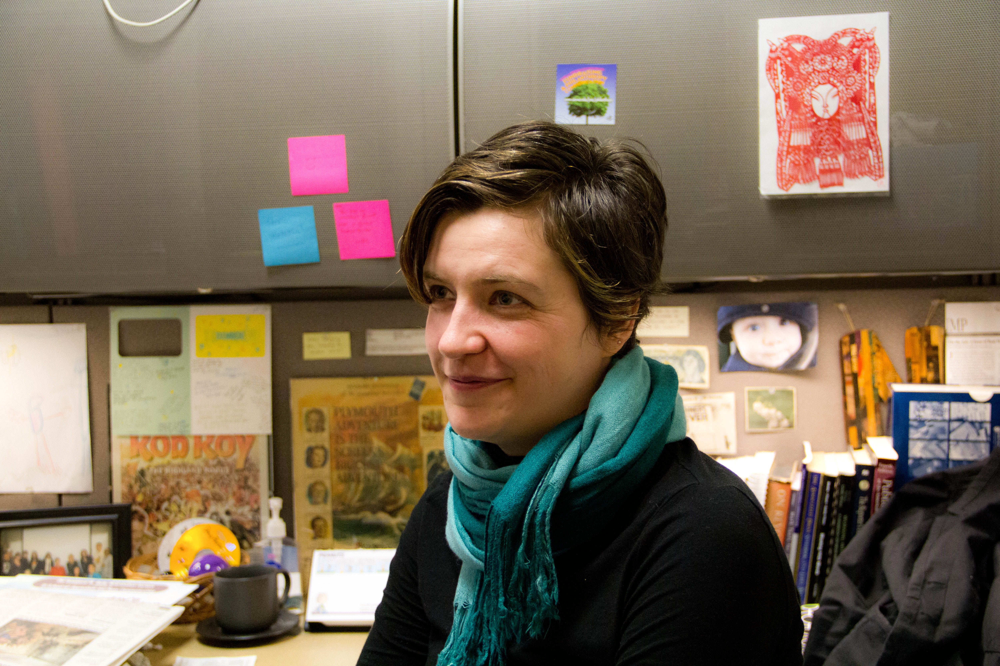

COMM 2024: Media Writing
Professor
Natalia Mielczarek teaches my section of Media Writing. Dr. Mielczarek is pretty strict, which honestly made me not a huge fan of hers at first. However, as I get to know her more, I am realizing that she has our best interest in mind, and she is very willing to help if we ask for it.
Education
Dr. Mielczarek got her bachelor's degree from Vanderbilt University in Nashville, Tennessee. Next, she earned her M.A. from the University of Missouri School of Journalism. Lastly, she completed her PhD at the University of Iowa.
Interests
Dr. Mielczarek has always been interested in many aspects of Communication. She has expertise in Visual Communication, Iconic Images, and Digital Participatory Culture and Viral Content. In addition, she is involved in multiple communication based activities professionally. Dr. Mielczarek is involved in the Association for Education Journalism and Mass Communication, as well as the International Communication Association. While she has not yet participated in any University sponsored research, Dr. Mielczarek has written multiple professional articles, including a study with the United States Army War College Press entitled, "Big pictures and visual propaganda: The lessons of research on the ‘effects’ of photojournalistic icons."
Class Description
This class is basically simulating the feel of a traditional news room. We have had many projects such as a basic news story, a press release, a feature story, and an investigative story. For each piece, we have to present a pitch, personally interview a certain number of sources, and then write our story.
Opinion
To be completely honest, I am not a huge fan of this class. As an aspiring journalist, I usually enjoy writing stories like this. However, the amount of sources required for each story in this class seems excessive. In addition, we are just students, not professional journalists, so many people have no desire to let us interview them. Still, this class does help me learn the essential skills for my desired job, albeit sometimes the hard way.
Expected Grade
As this is my hardest class, I was struggling at the beginning. However, I have started to do better in the class recently, and I have pulled my grade up to a B. I would love to get an A in this class, but given the difficulty, I think the B plus range is more likely.
Pictured Above: Dr. Natalia Mielczarek